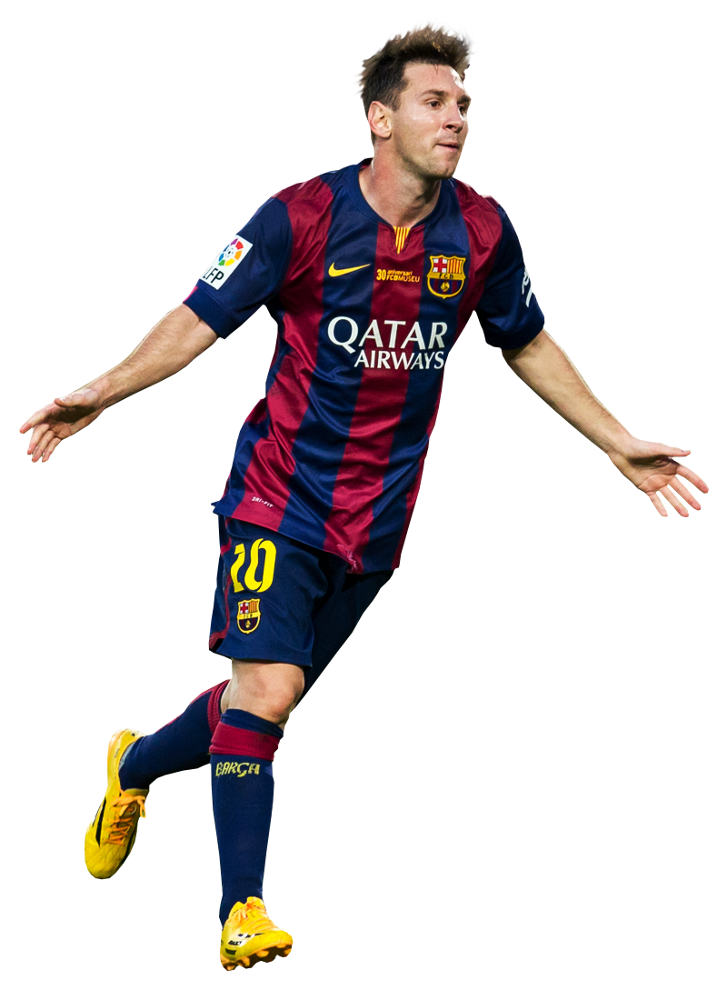

Messi
Lionel Andrés Messi, conocido en el mundo de fútbol como Leo Messi, nació en Argentina el 24 de junio de 1987, adquiriendo posteriormente la nacionalidad española en 2005. Gracias a su potencia, versatilidad, velocidad y fuerza física se convirtió en uno de los genios del mundo futbolístico.
Leo empezó su carrera en el Club Atlético Newell’s Old Boys. Con sólo trece años se trasladó con su familia a España, donde el FC Barcelona le propuso pagar los gastos del tratamiento de su enfermedad hormonal a cambio de que se incorporase al equipo infantil. Después de pasar por varias categorías inferiores debutó en 2003 en un amistoso, aunque su primer partido oficial no se disputó antes de octubre de 2004 contra el RCD Espanyol. Con 16 años Messi devino a ser el jugador más joven de la historia del conjunto azulgrana en jugar en la Primera División española. Con la ida de Ronaldinho del Barcelona, Leo empezó a brillar con nuevos colores y en el equipo de Josep Guardiola se convirtió en un líder y un jugador clave.
Messi ha logrado perfeccionar su técnica de regate y su velocidad. Es un jugador polifacético con un gran instinto de gol y la creatividad. En el campo actúa de atacante, crea excelentes oportunidades y asistencias a sus compañeros y ayuda en defensa. Es un gran experto en las situaciones a balón parado, como saques de esquina, tiros libres y penaltis.
Con el Barcelona Messi fue cinco veces campeón de España (2005-2006, 2009-2011), tres veces ganador de la Champions (2006, 2009 y 2011), ganó el título del máximo goleador de la Liga en 2010 y 2012, así como cuatro veces fue nombrado el mejor goleador de la Champions (2009-2012). Obtuvo el premio de la FIFA como el mejor jugador mundial y consiguió cuatro veces consecutivas el Balón de Oro y varias veces la Bota de Oro. Junto con la selección nacional de Argentina ganó el oro de los Juegos Olímpicos en Beijing.
